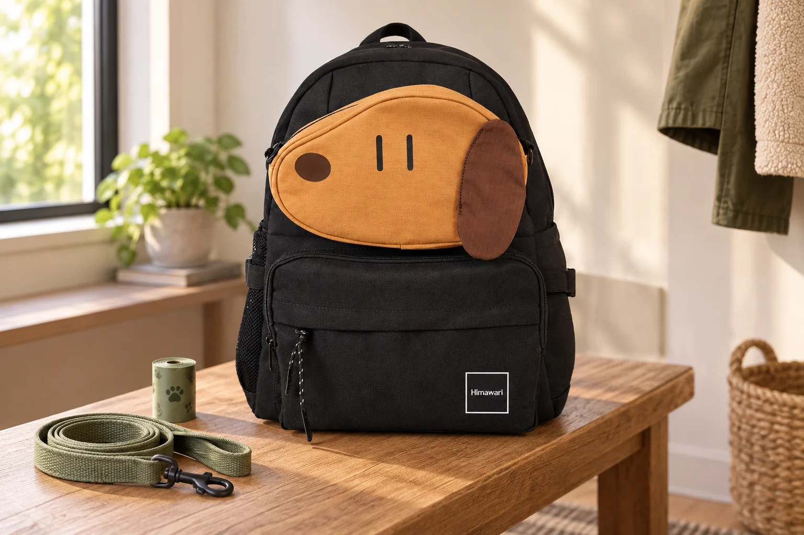

반려견 산책에서 가방을 열기 전에 멈출 자리

반려견과 산책하는 동안 한 손에는 리드줄이 있습니다. 다른 손으로 봉투를 찾거나 물건을 꺼내야 할 때 가방을 어디에서 어떻게 열지 정해두면 동작이 덜 겹칩니다. 집에서 물건의 위치를 아는 것과 길에서 바로 꺼내는 것은 다르게 느껴질 수 있습니다. 준비물을 담는 일에 앞서 잠시 멈출 자리와 다시 정리할 순서를 생각해봅니다.
짧은 산책과 오래 머무는 외출은 준비할 묶음이 달라질 수 있습니다. 실제 일정과 반려견에게 필요한 준비를 기준으로 고릅니다. 간식이나 물을 가져갈지는 평소 관리 기준과 필요한 안내를 따릅니다. 이 글에서는 먹는 양이나 급수 방법을 정하지 않습니다. 가져가기로 한 도구를 어느 순간에 사용할지 나누어보는 것이 수납의 출발점입니다.
현관에서 첫 장을 꺼내보기
배변봉투는 묶음을 챙기는 것과 첫 장을 꺼낼 수 있는 상태를 만드는 것이 다릅니다. 사용하는 케이스에서 봉투 끝을 찾을 수 있는지, 남은 수량이 있는지 출발 전에 직접 확인합니다. 산책 중 포장을 새로 뜯어야 한다면 집에서 필요한 준비를 마칠 수 있습니다. 여분은 사용하는 묶음과 연결하되 지금 쓸 것을 찾을 위치는 분명히 둡니다.
티슈나 수건도 실제로 꺼내보며 위치를 정합니다. 한쪽 포켓에 모았는데 지퍼를 열려면 가방을 완전히 벗어야 한다면 그 동작을 어디에서 할지 생각해야 합니다. 자주 쓰는 물건을 모두 밖에 달 필요는 없습니다. 외부에 매단 도구가 걸리거나 움직이는지 보고, 사용하는 보관 방법에 맞춰 필요한 만큼만 준비합니다.
산책 전에 한 손에 리드줄을 쥔 상태에서 다른 손에 무엇이 남는지 떠올려봅니다. 두 동작을 동시에 해내려는 연습보다 순서를 나눌 수 있는지 보는 것입니다. 문을 나선 뒤 가방을 다시 열어야 할 준비가 있다면 가능한 부분을 먼저 마칩니다. 동행자가 있으면 누가 무엇을 챙길지 이야기하고, 서로 챙겼다고 생각하는 물건은 실제로 확인합니다.
개인 물건을 담을 가방의 자료로 Himawari No.0423을 함께 소개합니다. 산책에서 필요한 것은 정한 물건을 넣고 멈춘 자리에서 꺼낼 수 있는 구성입니다. 가지고 있는 봉투 케이스와 용기를 기준으로 실제 배치를 정해보세요. 가방 디자인의 이름이나 인상에서 반려동물 전용 기능을 읽어낼 필요는 없습니다.

가방을 열기 전 먼저 멈추기
필요한 물건이 생기면 통행을 막지 않는 여유 있는 장소를 찾습니다. 반려견과 리드줄을 안정적으로 관리한 뒤 가방을 여는 순서를 정합니다. 가방을 열려고 리드줄을 놓거나 가방 손잡이에 임의로 연결하지 않습니다. 혼자 두 동작을 함께 하기 어렵다면 물건 위치를 바꾸거나 동행자에게 도움을 받는 방식으로 진행할 수 있습니다.
가방을 내려놓는 경우에는 어디에 놓았는지와 끈의 방향도 봅니다. 다시 메기 전에 사용한 소품을 정리하고 여밈을 확인합니다. 물건을 꺼냈다가 손에 모두 쌓아 들면 다시 이동할 때 리드줄과 짐의 역할이 섞일 수 있습니다. 필요한 동작 하나를 마친 다음 원래 보관 위치로 돌려두면 다음에 꺼낼 곳도 그대로 남습니다.
먹을 것과 사용한 티슈는 서로 다른 묶음으로 둡니다. 용기는 해당 제품의 안내에 맞게 닫고 개인 소지품과 닿는 위치를 살펴봅니다. 사용한 물건을 잠깐 운반할 주머니가 있다면 깨끗한 소품을 꺼내는 자리와 구분합니다. 같은 작은 주머니를 상황에 따라 아무 용도로 쓰면 나중에 무엇을 담았는지 다시 확인해야 합니다.
배변을 담은 봉투는 정해진 처리 안내에 맞춰 다룹니다. 매듭을 지었다는 이유로 깨끗한 물건과 같은 묶음에 넣지 않고, 필요한 수거·임시 운반 방법을 별도로 준비합니다. 집에 돌아온 뒤에도 가방 안에 보관하는 물건으로 생각하지 않습니다. 사용하는 용기의 안내와 현장의 처리 기준을 따릅니다.
물그릇과 사용한 물건이 돌아오는 자리
휴대용 물그릇을 사용했다면 접기 전에 남은 물과 겉면 상태를 확인합니다. 접은 크기만 보고 바로 깨끗한 짐 옆에 넣는 대신 임시로 분리할 위치를 정합니다. 세척과 건조는 그릇의 안내를 따르고, 가방에 넣은 뒤 잊지 않도록 귀가 후 먼저 꺼낼 묶음으로 둡니다. 사용 전과 후의 보관 자리를 같은 상태로 생각하지 않습니다.
산책이 끝나면 가방을 정해둔 자리에 놓고 사용한 물건부터 꺼냅니다. 깨끗한 여분과 함께 보관되었던 것을 살펴보고 필요한 정리를 합니다. 봉투 수량은 지금 쓰는 케이스에서 확인하고 다음 출발에 필요한 만큼 준비합니다. 물건을 채우는 일과 사용한 묶음을 비우는 일을 같은 시간에 할 수 있습니다.
다음 산책을 위한 메모는 찾기 어려웠던 물건 하나면 됩니다. 어떤 위치에서 멈추었는지, 가방을 벗어야 했는지, 동행자가 있을 때 순서가 어땠는지 남길 수 있습니다. 새 가방을 사기 전에 현재 배치에서 바꿀 수 있는 동작을 찾아봅니다. 반복해서 꺼내는 도구와 여분을 나누면 외출 중 확인할 위치가 구체적으로 줄어듭니다.
현관에서 봉투 한 장을 꺼낼 수 있고, 길에서 멈춘 뒤 필요한 물건을 정리할 순서가 있다면 준비를 이어갈 수 있습니다. 귀가하면 사용한 묶음을 꺼내고 도구를 안내대로 정리합니다. 다음번에는 그 위치의 수량과 상태부터 확인하세요. 리드줄을 잡은 손의 역할을 유지하면서 가방은 멈춘 자리에서 여는 흐름을 만들어봅니다.